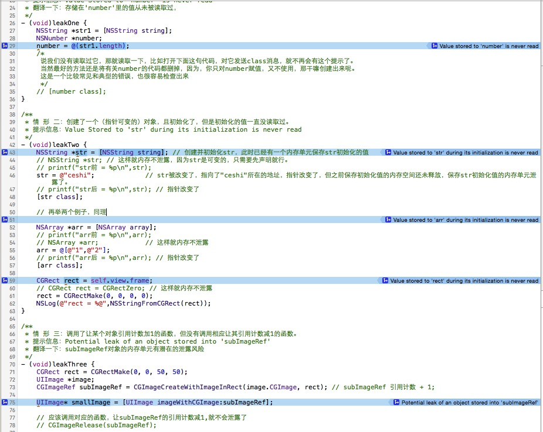
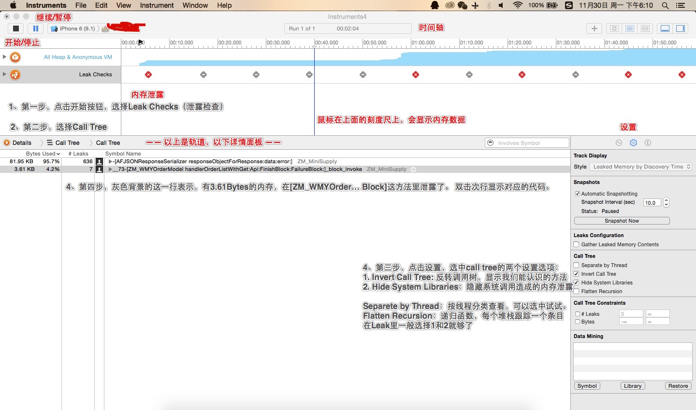
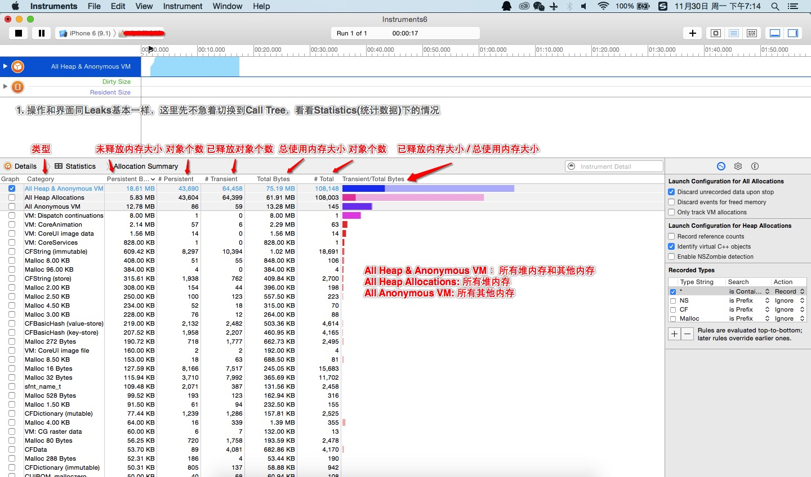
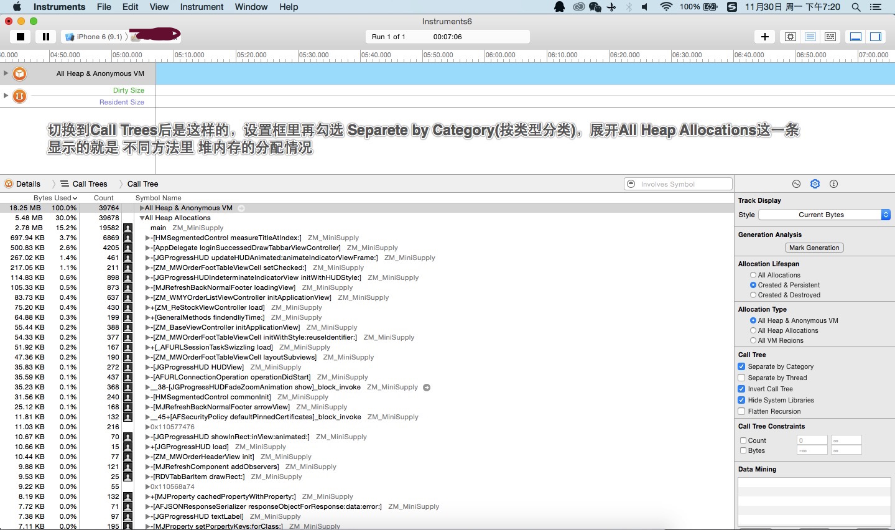

iOS性能优化之内存管理：Analyze、Leaks、Allocations的使用和案例代码
最近接了个小任务，和公司的iOS小伙伴们分享下instruments的具体使用，于是有了这篇博客...性能优化是一个很大的话题，这里讨论的主要是内存泄露部分。
一. 一些相关概念
很多人应该比较了解这块内容了...可以权当复习复习...
1.内存空间的划分: 我们知道，一个进程占用的内存空间，包含5种不同的数据区：（1）BSS段：通常是存放未初始化的全局变量；（2）数据段：通常是存放已初始化的全局变量。（3）代码段：通常是存放程序执行代码。（4）堆：通常是用于存放进程运行中被动态分配的内存段，OC对象（所有继承自NSObject的对象）就存放在堆里。（5）栈：由编译器自动分配释放，存放函数的参数值，局部变量等值。
栈内存是系统来管理的，因此我们常说的内存管理，指的是堆内存的管理，也就是所有 OC对象的创建和销毁的管理。伴随着iOS5的到来，苹果推出了ARC（自动引用计数）技术，此模式下编译器会自动在合适的地方插入retain、 release、autorelease语句，也就是说编译器会自动生成内存管理的代码，解放了广大程序猿的双手，也基本上避免了内存泄露问题，但是 呢...
2.内存泄露：百 度百科给的定义是："内存泄漏也称作'存储渗漏'，用动态存储分配函数动态开辟的空间，在使用完毕后未释放，结果导致一直占据该内存单元。直到程序结束。 （其实说白了就是该内存空间使用完毕之后未回收）即所谓内存泄漏"。在iOS应用中的内存泄露，原因一般有循环引用、错用Strong/copy等。
二. Analyze—静态分析
顾名思义，静态分析不需要运行程序，就能检查到存在内存泄露的地方。
1. 使用方法：打开Xcode，command + shift + B；或者Xcode - Product - Analyze；
2. 常见的三种泄露情形：
（1）创建了一个对象，但是并没有使用。Xcode提示信息：Value Stored to 'number' is never read。翻译一下：存储在'number'里的值从未被读取过。
（2）创建了一个（指针可变的）对象，且初始化了，但是初始化的值一直没读取过。Xcode提示信息：Value Stored to 'str' during its initialization is never read
（3）调用了让某个对象引用计数加1的函数，但没有调用相应让其引用计数减1的函数。Xcode提示信息：Potential leak of an object stored into 'subImageRef'。 翻译一下：subImageRef对象的内存单元有潜在的泄露风险。
3. 贴上Demo代码：


/** * 情 形 一：创建了一个对象，但是并没有使用。 * 提示信息：Value Stored to 'number' is never read * 翻译一下：存储在'number'里的值从未被读取过， */ - (void)leakOne { NSString *str1 = [NSString string]; NSNumber *number; number = @(str1.length); /* 说我们没有读取过它，那就读取一下，比如打开下面这句代码，对它发送class消息，就不再会有这个提示了。 当然最好的方法还是将有关number的代码都删掉，因为，你只对number赋值，又不使用，那干嘛创建出来呢。 这是一个比较常见和典型的错误，也很容易检查出来 */ // [number class]; } /** * 情 形 二：创建了一个（指针可变的）对象，且初始化了，但是初始化的值一直没读取过。 * 提示信息：Value Stored to 'str' during its initialization is never read */ - (void)leakTwo { NSString *str = [NSString string]; // 创建并初始化str，此时已经有一个内存单元保存str初始化的值 // NSString *str; // 这样就内存不泄露，因为str是可变的，只需要先声明就行。 // printf("str前 = %p\n",str); str = @"ceshi"; // str被改变了，指向了"ceshi"所在的地址，指针改变了，但之前保存初始化值的内存空间还未释放，保存str初始化值的内存单元泄露了。 // printf("str后 = %p\n",str); // 指针改变了 [str class]; // 再举两个例子，同理 NSArray *arr = [NSArray array]; // printf("arr前 = %p\n",arr); // NSArray *arr; // 这样就内存不泄露 arr = @[@"1",@"2"]; // printf("arr后 = %p\n",arr); // 指针改变了 [arr class]; CGRect rect = self.view.frame; // CGRect rect = CGRectZero; // 这样就内存不泄露 rect = CGRectMake(0, 0, 0, 0); NSLog(@"rect = %@",NSStringFromCGRect(rect)); } /** * 情 形 三：调用了让某个对象引用计数加1的函数，但没有调用相应让其引用计数减1的函数。 * 提示信息：Potential leak of an object stored into 'subImageRef' * 翻译一下：subImageRef对象的内存单元有潜在的泄露风险 */ - (void)leakThree { CGRect rect = CGRectMake(0, 0, 50, 50); UIImage *image; CGImageRef subImageRef = CGImageCreateWithImageInRect(image.CGImage, rect); // subImageRef 引用计数 + 1; UIImage* smallImage = [UIImage imageWithCGImage:subImageRef]; // 应该调用对应的函数，让subImageRef的引用计数减1,就不会泄露了 // CGImageRelease(subImageRef); [smallImage class]; UIGraphicsEndImageContext(); }
贴上照片:

三. Leaks—内存泄露
Leaks是动态的内存泄露检查工具，需要一边运行程序，一边检测。
1.使用方法: 进入Xcode，command + control + i；或者Xcode - Xcode - Open Developer Tool - Instruments; 或者Xcode - Product - Profile。选择Leaks。
2.界面详情如下，这是运行时的界面

测试了好几个项目，发现用静态分析检查过的代码，内存泄露都比较少。有2个项目能点的按钮都点了，能进的页面都进的，Leaks也没检测到泄露。
四. Allocations—内存分配
Allocations是检测程序运行过程中的内存分配情况的，也需要同时运行着程序。1.打开方法：同上。2.界面情况如下：

截图二：

双击某一个方法，同样会跳转到代码里，会有每一句代码对应的内存分配情况，根据这些信息，可以对程序里不同代码的内存占用情况有一些认识，并进行针对性的优化。
五. 平时写代码的一些tip
说到底呢，instruments只是一组工具，帮助我们分析代码的工具，可能检查的出的内存问题和性能问题，肯定还是由代码造成的。养成良好的代码习惯，才是根本的解决方法。首先是避免出现静态分析里提到的三种常见内存泄露问题，我测试的好几个项目里，都有出现这个问题。
tip1：哪些情况会增加App的内存占用？「非完整版」
(1) 创建对象，定义变量。（2）调用一个函数或方法。
tip2：哪些情况会增加CPU的消耗？「搬运自YYKit的作者的博客（强烈推荐）：ibireme」
(1) 创建对象、调整对象属性、销毁对象。（2）布局计算和Autolayout。（3）文本的计算和渲染。（4）图片的解码和绘制。「用Time Profiler分析一下，可以更直观地感受到哪些操作比较耗时，使用方法同上。」
小结：做好cell等可复用对象的重用；可以只创建一次的对象，不要创建多次（比如页面的某个功能弹窗）；用较少的对象和方法调用去实现功能；将耗时的操作放在子线程等可以对内存和性能做一些优化。